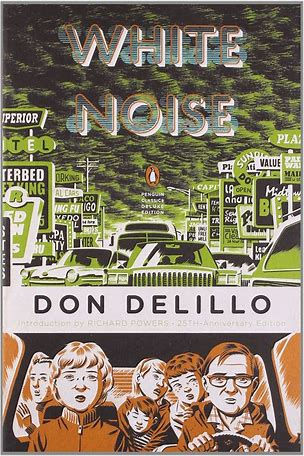

White Noise tells the story of Jack Gladney, his fourth wife, Babette, and four ultramodern offspring as they navigate the rocky passages of family life to the background babble of brand-name consumerism.
How does disaster affect Jack and his
family? How does each deal with the disaster after they each come face-to-face
with the airborne disaster?
Explain the concept of believing in an afterlife in relation to death. How do the
nuns feel about non-believers?
How does the power of suggestion affect
the family during the disaster?
How does Jack define Babette's sense of
self?
What role does the television play in relation to Jack and his family?
What is the irony on the SIMULVAC team
during and after the airborne disaster?